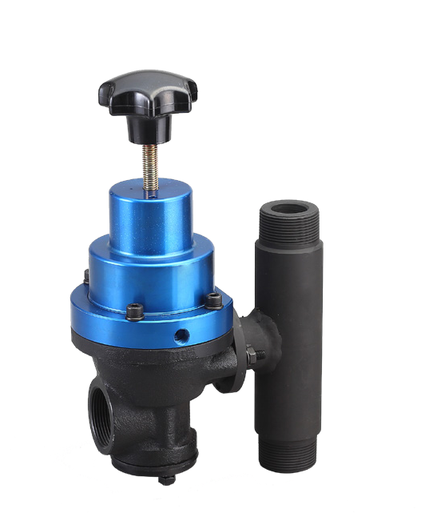
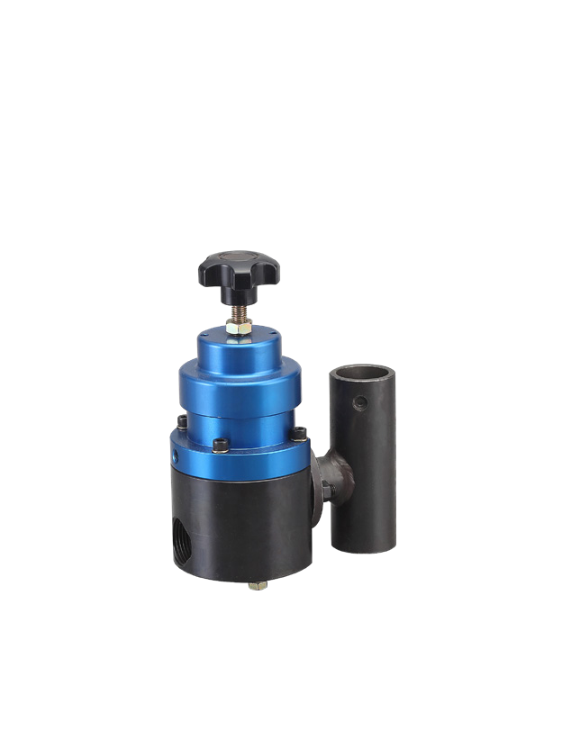
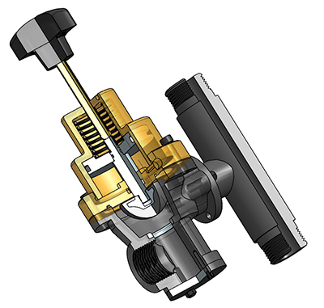
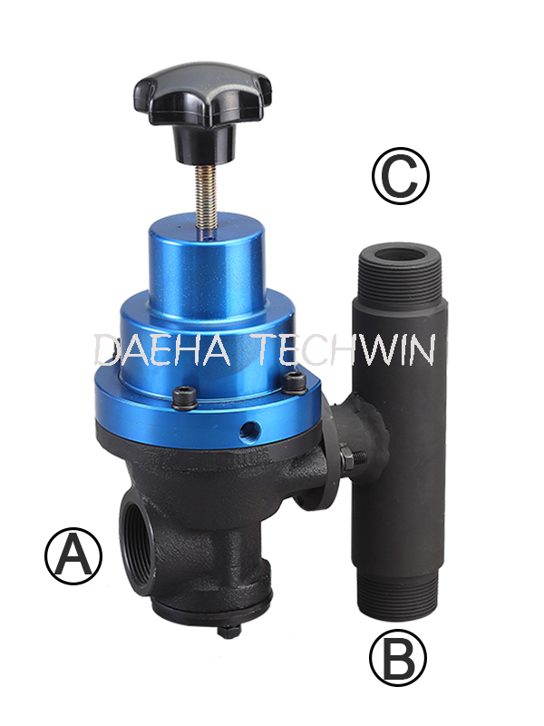
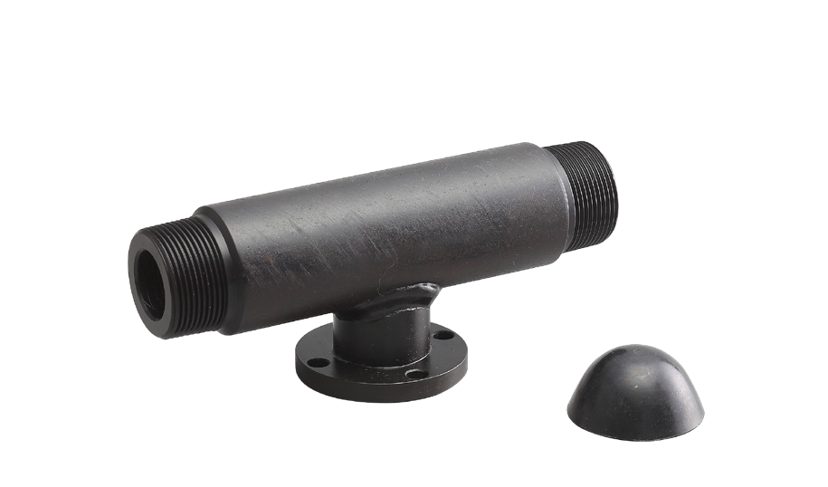

블라스트 부품 / 그리트밸브
그리트밸브 Grit Valve
에어 블라스트 탱크(직압식 블라스트 포트) 하부에 장착되어, 탱크에서 낙하하는 연마재(쇼트볼·그리트)의 공급량을 정밀 제어하고 고압 공기와 혼합하여 블라스트 호스로 토출하는 공압 구동식 3-way 연마재 정량 제어 밸브입니다.



작동 원리 및 구조적 특징 Features & Mechanism
- 원뿔형 콘(Cone) 개폐 구조: 시중의 핀(Pin) 방식과 달리 원뿔형 고무 콘이 상하로 승강하며 연마재 유로를 개폐합니다. 연마재 끼임에 의한 고착이 적고 연속 분사 시 유량 안정성이 높으며, 이상 발생 시 점검 및 교체가 간편합니다.
- 단동식 공압 액츄에이터 제어: 작업자의 리모컨 조작으로 파일럿 에어가 공급되면 콘이 열려 연마재를 배출하고, 에어가 차단되면 내장 스프링 복원력으로 즉시 닫혀 토출을 차단합니다. (※ 배관 설비 조건에 따라 수동 핸들 제어 방식 구성도 가능합니다.)
- 상단 핸들 정밀 유량 조절: 밸브 상단 핸들을 회전시켜 콘의 최대 열림 높이를 제한함으로써, 작업 대상물과 연마재 입도에 맞는 최적의 혼합비를 세팅할 수 있습니다.
- 이중 내마모 설계: 콘 접촉부에는 열처리된 가이드를 적용하고, 고속 연마재가 통과하는 하부 티(TEE)는 담금질·뜨임 열처리를 거쳐 마모 수명을 대폭 연장했습니다.
포트 연결 구조 및 주요 사양 Ports & Specifications

- 포트 Ⓐ (연마재 유입구): 블라스트 탱크 하부 배출구와 연결되어 탱크 내 쇼트볼·그리트가 유입되는 입구입니다.
- 포트 Ⓑ (압축공기 유입구): 메인 에어 라인으로부터 고압 압축공기가 유입되는 티(TEE) 측 입구입니다.
- 포트 Ⓒ (혼합 토출구): 계량된 연마재와 압축공기가 혼합되어 블라스트 호스 측으로 배출되는 티(TEE) 측 출구입니다.
| 모델 (Model) | DGV-15, DGV-20, DGV-25, DGV-32, DGV-40 (카탈로그 표준: DGV-25, DGV-32, DGV-40) |
|---|---|
| 포트 Ⓐ 규격 (연마재 유입구) | ½", ¾", 1", 1¼", 1½" |
| 티(TEE) 규격 [포트 Ⓑ - 포트 Ⓒ] | Ⓑ 25A - Ⓒ 25A · Ⓑ 32A - Ⓒ 32A · Ⓑ 40A - Ⓒ 32A · Ⓑ 40A - Ⓒ 40A (20A 대응 가능) |
| 파일럿 포트 (Pilot Port) | PT ¼" |
| 사용 압력 (Working Pressure) | 5 ~ 9 kg/㎠ |
| 중량 (Weight) | 8 kg (DGV-32 / DGV-40 기준) |
| 별도 구매 가능 부속 | 티 (TEE), 콘 (Cone) |
소모품 개별 교체 안내 Consumables (TEE & Cone)

- 그리트밸브 티 (Grit Valve TEE): 밸브 하부에 결합되는 혼합 배관 부속으로, 담금질·뜨임 등 열처리를 통해 내마모성을 극대화했습니다. (규격: 40A-40A, 40A-32A, 32A-32A, 25A-25A / 20A 대응 가능)
- 그리트밸브 콘 (Grit Valve CONE): 내마모성 연질 합성고무(BR)를 적용해 우레탄 대비 연마재 흐름성과 막힘 방지에 효과적이며, 콘 내부 실린더 연결부를 알루미늄 재질로 제작해 녹과 눌러 붙음을 방지했습니다. (32A·40A 공용 규격으로 에어밸브 32A·40A와도 호환 사용)
견적·규격 문의 051-319-2332 · daehatw@daum.net